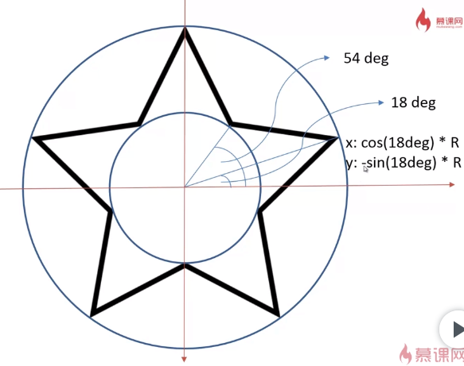
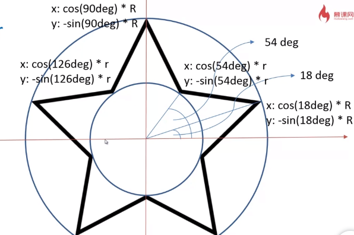
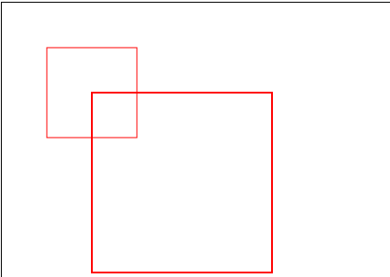
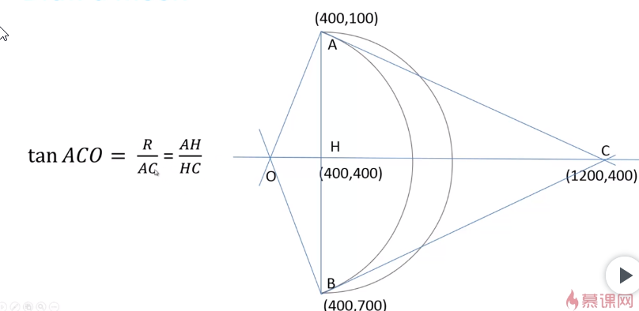

原文连接:https://www.cnblogs.com/jiaobaba/p/11579621.html
用变量的方式绘制一个五角星，首先求五角星十个顶点的坐标。
可以把每个五角星看成外顶点用一个大圆绘制，内顶点用小圆绘制。在坐标系（0deg）下，根据每个顶点的角度和圆的半径求得x,y。

而每个大顶点相差72deg(180/5),每个小顶点也差72deg.所以下一个顶点的度数就是当前点加上72deg.(逆时针)

代码实现画一个五角星
function drawStar(context, R, r, x, y，rot) { // R:大圆半径，r:小圆半径，x: x方向圆心位置 y: y方向圆心位置，rot:旋转角度
context.beginPath();
for (var i = 0; i < 5; i++) {
//因为角度是逆时针计算的，而旋转是顺时针旋转，所以是度数是负值。
context.lineTo(x + Math.cos((18 + 72 * i - rot) / 180 * Math.PI) * R,
y - Math.sin((18 + 72 * i - rot) / 180* Math.PI)* R);
context.lineTo(x + Math.cos((54 + 72 * i - rot) / 180 * Math.PI) * r,
y - Math.sin((54 + 72 * i - rot) / 180 * Math.PI) * r);
}
context.closePath();
context.stroke();
}画多个五角星
for (var i = 0; i < 200; i++) {
var r = Math.random() * 10 + 10; //大小随机
var x = Math.random() * canvas.width; //位置随机
var y = Math.random() * canvas.height;
var rot = Math.random() * 360; //星星旋转角度随机
drawStar(context, r, r / 2, x, y, rot);
}
function drawStar(context, R, r, x, y, rot) {
context.beginPath();
for (var i = 0; i < 5; i++) {
context.lineTo(x + Math.cos((18 + 72 * i - rot) / 180 * Math.PI) * R,
y - Math.sin((18 + 72 * i - rot) / 180 * Math.PI) * R);
context.lineTo(x + Math.cos((54 + 72 * i - rot) / 180 * Math.PI) * r,
y - Math.sin((54 + 72 * i - rot) / 180 * Math.PI) * r);
}
context.closePath();
context.fillStyle = '#fb3';
context.strokeStyle = '#fd5';
context.lineWidth = 3;
context.lineJoin = 'round';
context.fill();
context.stroke();
}
然而上面代码并不符合软件工程的设计原则，一个函数包含了很多功能（绘制星星和位移，旋转角度都放在一个方法里）。当需求发生变化时，例如将五角星变成圆或多边形,就需要重新修改整个方法。在图形学中任何的图形学都使用先绘制基本轮廓再根据需求进行图形变换。也就是说一个方法绘制原始图形的路径，一个方法对图形进行变换（位移，角度，大小...） , 用户也可以直接传一个图形的路径或方法，根据路径进行绘制。
图形变换
- context.translate(x, y); 对canvas坐标系进行整体位移
- context.rotate(angle); 给canvas画布添加旋转矩阵，顺时针方向默认旋转中心点是Canvas的左上角(0, 0)坐标点，如果希望改变旋转中心点，例如以Canvas画布的中心旋转，需要先使用translate()位移旋转中心点。
注意：以上两个方法平移，旋转的是坐标系，而非元素。因此，实际开发的时候，平移或旋转完毕，需要将坐标系再还原。使用save(),restore().

-
context.scale(x, y);用来缩放Canvas画布的坐标系，只是影响坐标系，之后的绘制会受此方法影响，但之前已经绘制好的效果不会有任何变化。因此下面代码虽然起始点一样，但是由于坐标系被放大，使得放大后的图形起始点改变。如果设置lineWidth，也会放大。使用时要注意。
context.strokeRect(50, 50, 100, 100);
context.scale(2, 2);
context.strokeRect(50, 50, 100, 100);

for (var i = 0; i < 200; i++) {
var x = Math.random() * canvas.width;
var y = Math.random() * canvas.height;
var rot = Math.random() * 360;
var r = Math.random() * 10 + 10;
transDraw(context, x, y, r,rot);
}
// 用户可以直接传一个图形的路径或方法，根据路径进行绘制。
function transDraw(context, x, y, r, rot){
context.save(); //将当前状态压入栈中。
context.translate(x, y);
context.scale(r, r);
context.rotate(Math.PI / 180 * rot);
context.fillStyle = '#fb3';
drawPath(context);
context.fill();
context.restore(); //将变换后的坐标系恢复到之前状态
}
//绘制一个图形路径，无旋转角度，偏移，大小设置为1的五角星
function drawPath(context) {
context.beginPath();
for (var i = 0; i < 5; i++) {
context.lineTo(Math.cos((18 + 72 * i) / 180 * Math.PI) ,
-Math.sin((18 + 72 * i) / 180 * Math.PI) ) ;
context.lineTo(Math.cos((54 + 72 * i) / 180 * Math.PI) * 0.5,
-Math.sin((54 + 72 * i) / 180 * Math.PI) * 0.5);
}
context.closePath();
}
绘制月亮
最外面的弧用半圆进行绘制，里面的弧使用画弧的arcTo()方法，传入的参数为：控制点，终止点，半径。
起始点，控制点，终止点这些都是根据不同的需求位置可变，所以我们需要根据可以可变的点求出同样可变的半径。以AOC为角，因为tan = 对边 / 邻边，所以根据下面的公式可以求出半径。

AC和AH的长度很好求，而AC的长度只需要使用两点间距离公式
具体代码，还是使用先绘制原始路径，在进行变换。
变换函数drawMoon传入的参数d代表arcTo的控制点的横坐标
function drawMoon(context, d, x, y, R, rot, fillColor) {
context.save();
context.translate(x, y);
context.scale(R, R);
context.rotate(Math.PI / 180 * rot);
MoonPath(context, d);
context.fillStyle=fillColor;
context.fill();
context.restore();
}
function MoonPath(context, d) {
context.beginPath();
context.arc(0, 0, 1, Math.PI * 0.5, Math.PI * 1.5, true); //绘制外面的弧
context.arcTo(d, 0, 0, 1, distance(0, -1, d, 0) / d); //绘制里面的弧
}
function distance(x1, y1, x2, y2) {
return Math.sqrt((x2 - x1) * (x2 - x1) + (y2 - y1) * (y2 - y1))
}最后就可以结合上面的星星月亮来绘制下面的一幅图